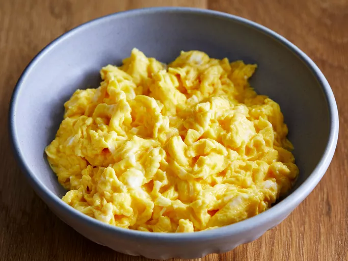

Scrambled Eggs Recipe

How to Make Scrambled Eggs
Scrambled Eggs is a classic breakfast dish that is made with eggs, butter, and salt. It is typically cooked in a pan until the eggs are scrambled and fluffy.
Ingredients
Steps
- In a large skillet over medium-high heat, melt butter.
- Then, add eggs to the pan and scramble.
- Next, season with salt.
- Finally, serve hot.